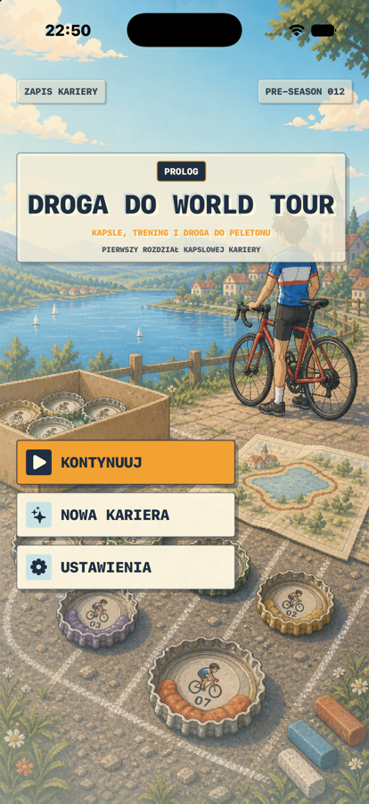
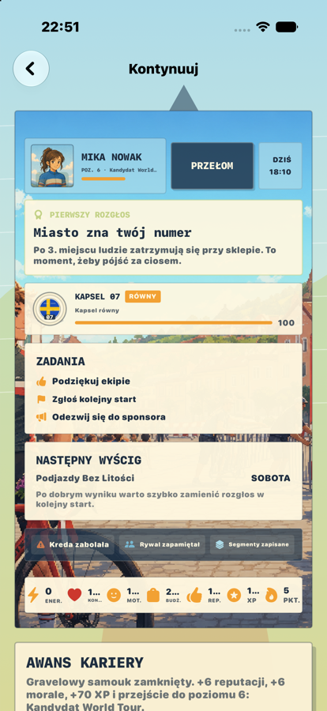
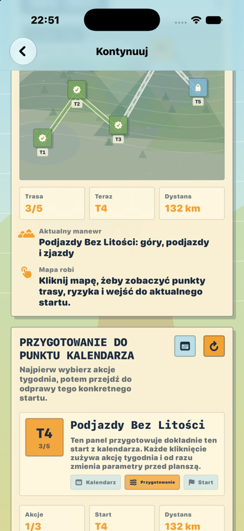
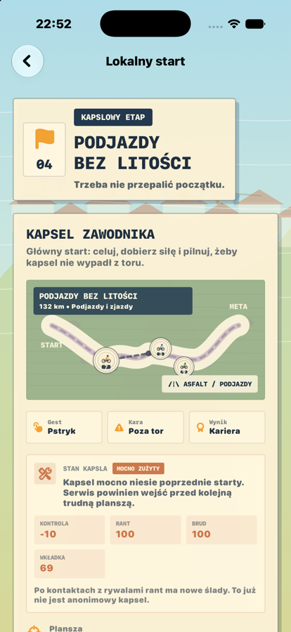
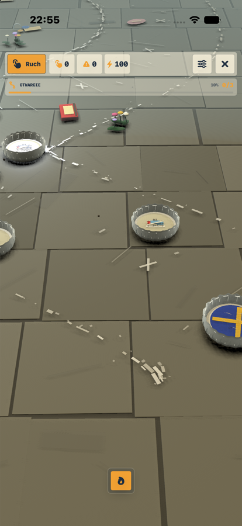

Kariera
Plan tygodnia, forma, odpoczynek, relacje i presja kolejnego startu.
Prolog 1.0.1 na iPhone
Kolarska kariera, cyfrowe kapsle i pierwszy sezon wielkiego ścigania. Zaczynasz od lokalnej trasy, budujesz formę, dbasz o sprzęt i uczysz się wygrywać kapslem na planszy 3D.
O grze
Droga do World Tour to gra o młodym kolarzu, który próbuje przejść drogę od amatorskich startów do profesjonalnego peletonu. W Prologu liczą się decyzje tygodnia, forma, morale, garaż kapsli, odprawa przed startem i pierwszy prawdziwy wyścig na planszy.
Sercem gry jest nowoczesna wersja kapslowego ścigania. Dotykasz kapsla, naciągasz kierunek i siłę, puszczasz palec, a wynik zależy od trasy, ryzyka, rytmu, sprzętu oraz przygotowania zawodnika.
Plan tygodnia, forma, odpoczynek, relacje i presja kolejnego startu.
Manualne pstrykanie na planszy 3D zamiast samej symulacji wyniku.
Wybór kapsla, stylu i przygotowania pod konkretny typ etapu.
Lipcowa Pętla 2026 jako pierwszy duży kontekst rywalizacji.
Pierwszy rozdział
Prolog jest samodzielnym wejściem w świat gry: wprowadza klimat, pokazuje zasady kapsli i daje pierwszą pełną pętlę od decyzji kariery do wyścigu. Strona opowiada teraz, czym jest gra i dlaczego warto wejść w ten świat.
Menu, wprowadzenie, hub kariery, przygotowanie dnia i pierwsze cele.
Ściganie kapslem w SceneKit z kamerą, linią trasy i fizycznym ruchem.
Reaktywna muzyka ambient/trip-hop i efekty pod rytm wyścigu.
Bez kont, reklam, analityki i śledzenia. Postęp zostaje lokalnie.
Sezon specjalny
Aktualny sezon gry nawiązuje do wielkiego lipcowego ścigania: start w Barcelonie, powrót do Francji, góry, czasówki i finał w Paryżu. W grze to autorska, nielicencjonowana interpretacja - bez oficjalnych znaków, koszulek, drużyn i logotypów.
21 etapów i rytm sezonu, w którym każdy dzień może zmienić plan kariery.
Prolog sezonu zaczyna się katalońskim akcentem i pierwszą jazdą drużynową.
Wspinaczki i zjazdy zmieniają kontrolę kapsla, ryzyko i przygotowanie.
Ostatni etap jest celem marzeń, ale najpierw trzeba przeżyć drogę.
Oficjalna trasa Tour de France 2026 ma 3320,7 km, 21 etapów: 7 płaskich, 4 pagórkowate, 8 górskich, jedną czasówkę drużynową, jedną indywidualną i dwa dni przerwy. Pierwsze etapy prowadzą przez Barcelonę, Tarragonę, Granollers i Les Angles.
Rozgrywka
Prolog pokazuje docelowy rytm gry: przygotowanie zawodnika, dopasowanie kapsla, odprawę przed startem i wyścig, w którym kontrola palcem spotyka się z formą, sprzętem oraz ryzykiem.
Trening, odpoczynek i nastrój zawodnika ustawiają punkt startu.
W garażu wybierasz styl, czucie i przygotowanie pod typ trasy.
Rywal, pogoda, sponsor i profil etapu mówią, gdzie warto zaryzykować.
Naciągasz kierunek oraz siłę, a kapsel sunie po zakrętach planszy 3D.
Wynik wraca do kariery: forma, morale, reputacja i następne cele rosną albo bolą.
Screeny z Prologu
Kadry pochodzą z aktualnego polskiego builda Prologu: menu, kariera, mapa przygotowań, odprawa kapsla i plansza wyścigu.




